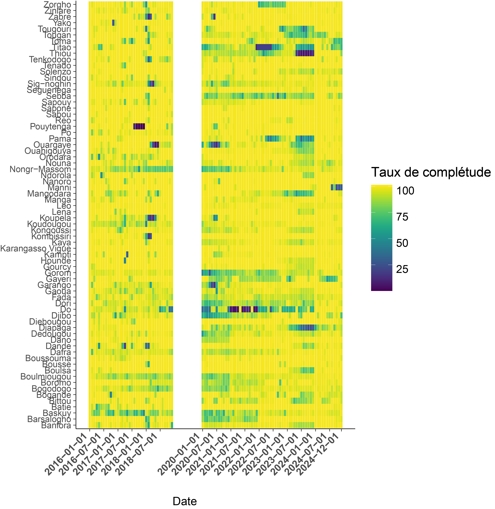
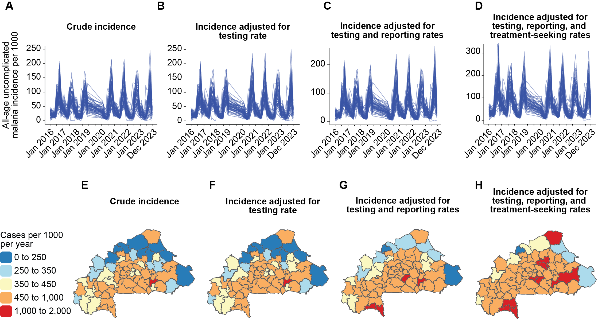

Time Series Analysis of Malaria Trends — Burkina Faso (2016–2023)
R
Epidemiology
Malaria
DHS
climate
Time series
Quantify the trend in malaria incidence at health district level and identify the factors associated with malaria incidence in Burkina Faso from 2016-2023 using routine cases data
Published
August 30, 2025
Period: 2016–2023 · Role: Lead Data Analyst · Location: Burkina Faso
Note
Overview
The aim of this study was to assess the malaria trends in Burkina Faso at the health district level to help understand the malaria transmission level between 2016 and 2023 and to determine the factors associated with malaria incidence to better understand the drivers of malaria in Burkina Faso. This analysis combined publicly available DHS/MIS and climate data with restricted HMIS surveillance data obtained from PNLP under data sharing agreement.
Role: Sole author responsible for data cleaning, quality assessment, analysis, modeling, mapping, and reporting.
Methods
Data sources
Variable
Definition
Source
Temporal
Period
Suspected cases
Clinical malaria suspicion (fever)
HMIS
Monthly
2016–2023 (excl. 2019)
Tested cases
Received RDT or microscopy
HMIS
Monthly
2016–2023
Confirmed cases
Positive RDT or microscopy
HMIS
Monthly
2016–2023
Presumed cases
Treated without positive test
HMIS
Monthly
2016–2023
Population
District population
HMIS
Annual (Monthy est)
2016–2023
Treatment-seeking (U5)
Public/private/no care
DHS/MIS
Every 3 years
2014, 2017–18, 2021
Data management
I applied a standard data quality workflow before analysis:
Standardized district and facility names across years.
Classified facility reporting activity (active vs. inactive).
Detected and imputed outliers using 3 mean+-SD, Median absolute deviation (MAD), and Iinterquartile range rules.
Managed missingness; validated reporting rates.
Incidence adjustments
Crude malaria incidence was calculated by dividing the number of reported confirmed cases for each health district and month by the district population and multiplying by 1000. Then, crude incidence was adjusted for each factor in accordance with the WHO framework.
Trend quantification
STL decomposition (LOESS) to separate seasonal, trend, residual components.
Sen’s slope for monotonic trend magnitude.
Mann–Kendall test for trend significance (α = 0.05).
Malaria burden estimated under four incidence definitions (2016–2023).
Trend analysis (seasonal + long-term) by district for each incidence definition.
Significant covariates associated with adjusted incidence.
Visual Highlights
1. Reporting rate

Fig. Monthly reporting rates per health district
Note
Key Insight: Data quality varied considerably from district to district. Some districts reported less than 50% during certain periods, which significantly skewed the crude incidence estimates.
2. Incidence estimates

Fig. Incidence estimates following WHO framework. A-D: Temporal trend for the four incidences (crude incidence, incidence adjusted by testing rate, incidence adjusted by testing rate and reporting rate, incidence adjusted by testing rate, reporting rate and care-seeking rate; E-D: Spatial analysis for the four incidences from 2023.
Note
Key Insight: Crude incidence and Adjustment 1 were nearly identical across districts, reflecting strong case management policies that ensure treatment follows testing. However, Adjustments 2 and 3 revealed hidden burden: poor reporting completeness in 2023 inflated incidence in several northern and eastern districts, while accounting for care-seeking (Adjustment 3) added ~450 cases per 1,000 in Gorom-Gorom, Gaoua, Kaya, Boussouma, and Fada. This underscores the importance of integrating care-seeking behavior into malaria burden estimates.
3. Malaria Incidence Trends
Sen’s slope coefficient (Mann kendall test)
Fig. Sen’s slope coefficient for the trend of malaria incidence adjusted for testing rate, weighted reporting rate and care-seeking rate; Gray color: not significant.
Note
Key Insight: Trend analysis (Mann-Kendall) of Adjustment 3 showed heterogeneity across districts: Gorom-Gorom, Sapone, and Kampti had significant upward trends, while 39 of 70 districts experienced significant declines, reflecting improved malaria control or reduced transmission in much of Burkina Faso
Code example
Normalize Function
This function standardizes the four malaria incidence indicators so they can be compared on the same scale across districts.
Tip
Reproducibility Note:
All analyses are fully reproducible in R. This snippet shows how indicators were normalized prior to trend analysis.
Code
## Function for normalize the four incidences rates (comparaison purpose)getNormalized <-function(vec) {if (!is.numeric(vec) ||all(is.na(vec))) {warning("Input vector is non-numeric or all NA; returning original vector")return(vec) } vec_mean <-mean(vec, na.rm =TRUE) vec_sd <-sd(vec, na.rm =TRUE)if (is.na(vec_sd) || vec_sd ==0) {warning("Standard deviation is 0 or NA; returning original vector")return(vec) } (vec - vec_mean) / vec_sd}## Create new variables to use in the trend analysismonthly_DS_incidence <- monthly_DS_incide %>% dplyr::mutate(mal_cases_norm =getNormalized(`Incidence brute`),incidence_adj_presumed_cases_norm =getNormalized(Adj1),incidence_adj_presumed_cases_RR_norm =getNormalized(Adj2),incidence_adj_presumed_cases_RR_TSR_norm =getNormalized(Adj3) )
STL Decomposition
This function decomposes the normalized time series into seasonal, trend, and remainder components, and applies Mann-Kendall and Sen’s slope tests to assess statistical significance.
Tip
Key Insight:
STL decomposition helped disentangle seasonal variation from long-term malaria trends, allowing robust detection of increasing or decreasing trajectories at the district level.
Public datasets: DHS, MIS, and climate datasets (e.g., CHIRPS rainfall) are fully open-access.
Restricted datasets: Routine HMIS surveillance data and intervention coverage data (ITN, SMC, RDT, ACT, IPTp stockouts) are not publicly available and were accessed under agreement with the Burkina Faso National Malaria Control Programme (PNLP).
For reproducibility, all data management scripts and statistical analysis code are provided. Analyses relying on restricted data are demonstrated using mock or simulated datasets.
Public Health Relevance
Demonstrated how data quality issues (reporting gaps, inactive facilities) bias malaria burden estimation.
Provided robust adjusted incidence trends to better inform malaria control strategy in Burkina Faso.
Delivered reproducible R workflow (cleaning, validation, modeling, mapping) for future NMCP analyses.